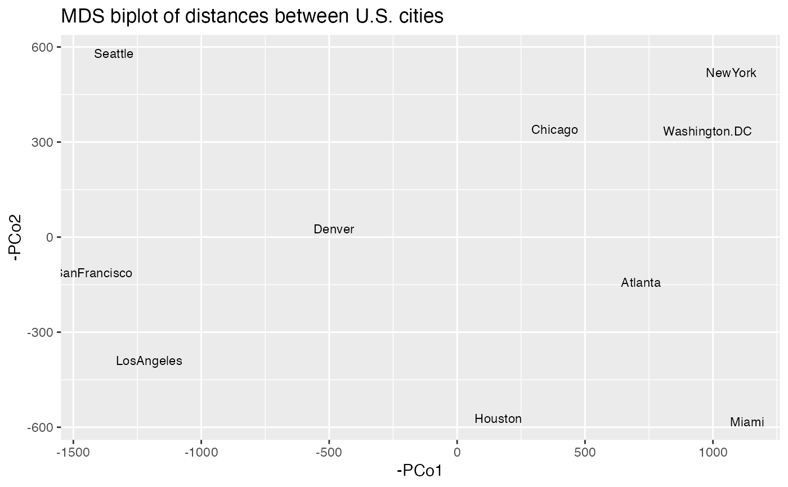

cmdscale() list outputcmdscale_tidiers.RdThese tidiers handle the output of cmdscale(), which under
certain conditions is effectively an S3 object without a class attribute.
It allows ordr to enhance the list_tidiers provided by broom.
tidy_cmdscale(x, matrix = "points", ...)
glance_cmdscale(x, ...)A list with components points, eig, x, ac, and GOF as
returned by stats::cmdscale().
Character specifying which list element should be tidied, matched to the following options.
"points": returns information about the coordinates in the
representation space.
"x": returns information about the doubly-centered symmetric matrix
used in the calculation.
"eig": returns information about the eigenvalues.
Additional arguments allowed by generics; currently ignored.
A tibble.
When cmdscale() is instructed to return any of several optional elements,
or when list. = TRUE, the output is not the default point coordinate matrix
but a 5-element list with a consistent naming scheme (though some elements
will be NULL if their parameters are not set to TRUE). These tidiers rely
on this list structure to organize the model output into a tibble.
generics::tidy() generics::glance() stats::cmdscale()
Other list tidiers:
cancor_tidiers,
list_tidiers
# 'dist' object (matrix of road distances) of large American cities
class(UScitiesD)
#> [1] "dist"
print(UScitiesD)
#> Atlanta Chicago Denver Houston LosAngeles Miami NewYork
#> Chicago 587
#> Denver 1212 920
#> Houston 701 940 879
#> LosAngeles 1936 1745 831 1374
#> Miami 604 1188 1726 968 2339
#> NewYork 748 713 1631 1420 2451 1092
#> SanFrancisco 2139 1858 949 1645 347 2594 2571
#> Seattle 2182 1737 1021 1891 959 2734 2408
#> Washington.DC 543 597 1494 1220 2300 923 205
#> SanFrancisco Seattle
#> Chicago
#> Denver
#> Houston
#> LosAngeles
#> Miami
#> NewYork
#> SanFrancisco
#> Seattle 678
#> Washington.DC 2442 2329
# use multidimensional scaling to infer artificial planar coordinates
UScitiesD %>%
cmdscale(k = 3L, eig = TRUE, x.ret = TRUE) ->
usa_mds
# glance at the model
glance(usa_mds)
#> # A tibble: 1 × 5
#> n k ac GOF1 GOF2
#> <int> <int> <dbl> <dbl> <dbl>
#> 1 10 3 0 0.996 1.00
# return the tidied coordinates
tidy(usa_mds)
#> # A tibble: 10 × 4
#> point PCo1 PCo2 PCo3
#> <chr> <dbl> <dbl> <dbl>
#> 1 Atlanta -719. 143. -35.1
#> 2 Chicago -382. -341. -29.6
#> 3 Denver 482. -25.3 -53.4
#> 4 Houston -161. 573. -1.45
#> 5 LosAngeles 1204. 390. 18.6
#> 6 Miami -1134. 582. 32.3
#> 7 NewYork -1072. -519. 34.3
#> 8 SanFrancisco 1421. 113. 7.75
#> 9 Seattle 1342. -580. 23.7
#> 10 Washington.DC -980. -335. 2.90
# return the upper triangle of the doubly-centered distance matrix in tidy form
tidy(usa_mds, matrix = "x")
#> # A tibble: 45 × 3
#> point1 point2 DC
#> <chr> <chr> <dbl>
#> 1 Atlanta Chicago -455349.
#> 2 Atlanta Denver 696244.
#> 3 Atlanta Houston -397937.
#> 4 Atlanta LosAngeles 1616685.
#> 5 Atlanta Miami -1789714.
#> 6 Atlanta NewYork -1393392.
#> 7 Atlanta SanFrancisco 2010263.
#> 8 Atlanta Seattle 2100366.
#> 9 Atlanta Washington.DC -1312890.
#> 10 Chicago Denver 348058.
#> # … with 35 more rows
#> # ℹ Use `print(n = ...)` to see more rows
# return the eigenvalues for the principal coordinates, with summary statistics
tidy(usa_mds, matrix = "eig")
#> # A tibble: 3 × 4
#> PCo eig percent cumulative
#> <int> <dbl> <dbl> <dbl>
#> 1 1 9582144. 0.850 0.850
#> 2 2 1686820. 0.150 0.999
#> 3 3 8157. 0.000723 1
# reorient to conventional compass
tidy(usa_mds) %>%
ggplot(aes(x = -PCo1, y = -PCo2)) +
geom_text(aes(label = point), size = 3) +
ggtitle("MDS biplot of distances between U.S. cities")
